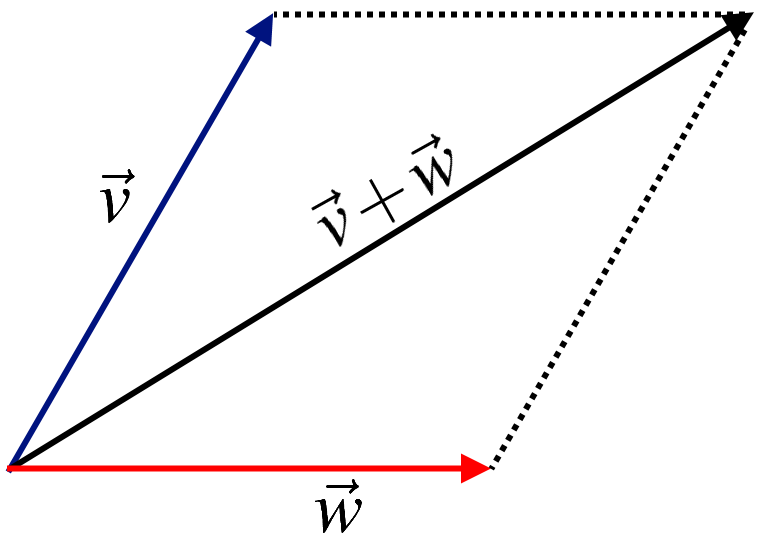
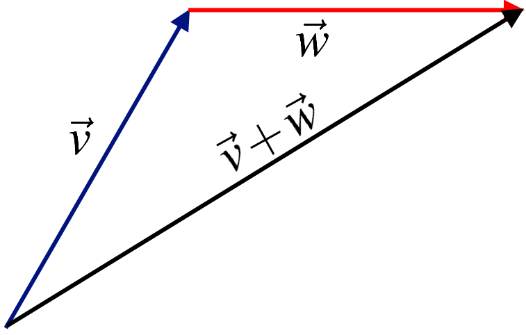
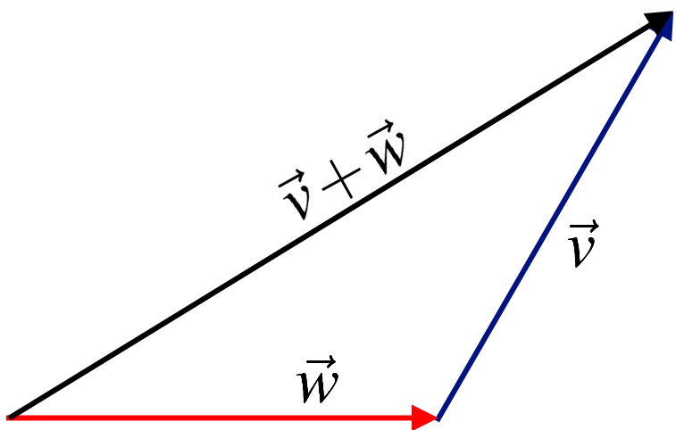
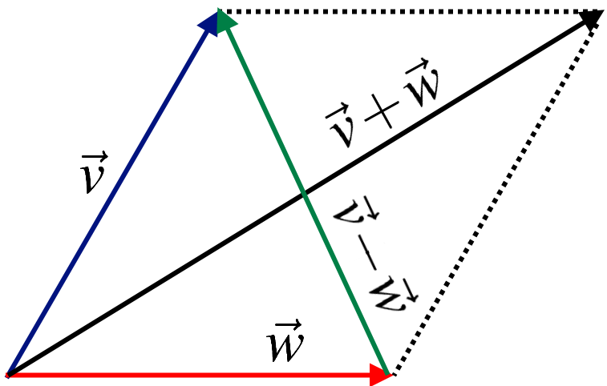
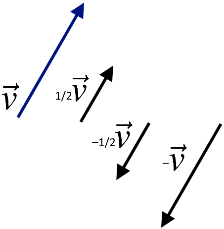

Geometric Meaning of Vector Addition and Scalar Multiplication¶
Geometric Vectors: Suppose that \(A\) and \(B\) are any two points in \(\mathbb{R}^3\). The line segment from \(A\) to \(B\) is denoted \(\overrightarrow{AB}\) and is called the geometric vector from \(A\) to \(B\). Point \(A\) is called the tail of \(\overrightarrow{AB}\), \(B\) is called the tip of \(\overrightarrow{AB}\).
In the parallelogram determined by two vectors \(\vec{v}\) and \(\vec{w}\), the vector \(\vec{v}+\vec{w}\) is the diagonal with the same tail as \(\vec{v}\) and \(\vec{w}\).
{kind=link}
If \(\vec{w}\) is moved so its tail coincides with the tip of \(\vec{v}\) then the sum \(\vec{v}+\vec{w}\) is seen as first \(\vec{v}\) and then \(\vec{w}\).
{kind=link}
Similarly, moving the tail of \(\vec{v}\) to the tip of \(\vec{w}\) shows in following figure that \(v+w\) is first \(\vec{w}\) and then \(\vec{v}\).
{kind=link}
This is referred to as the \textbf{tip-to-tail rule}, and it gives graphic illustrations why \(\vec{v}+\vec{w}=\vec{w}+\vec{v}\).
If \(\vec{v}\) and \(\vec{w}\) have a common tail, then \(\vec{v} - \vec{w}\) is the vector from the tip of \(\vec{w}\) to the tip of \(\vec{v}\).
{kind=link}
Examples of scalar multiples of a vector \(\vec{v}\):
{kind=link}
Refrences¶
Kuttler, Kenneth. “A First Course in Linear Algebra (Lyryx).” (2018).
Nicholson, W. Keith. “Linear Algebra with Applications (Lyryx).” (2018).